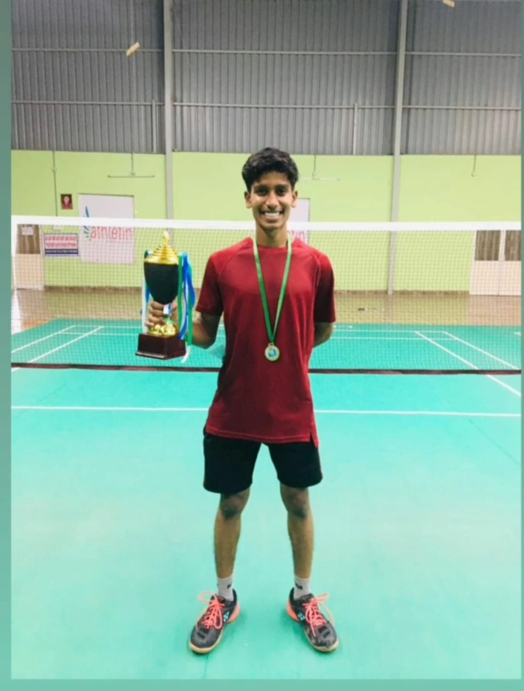
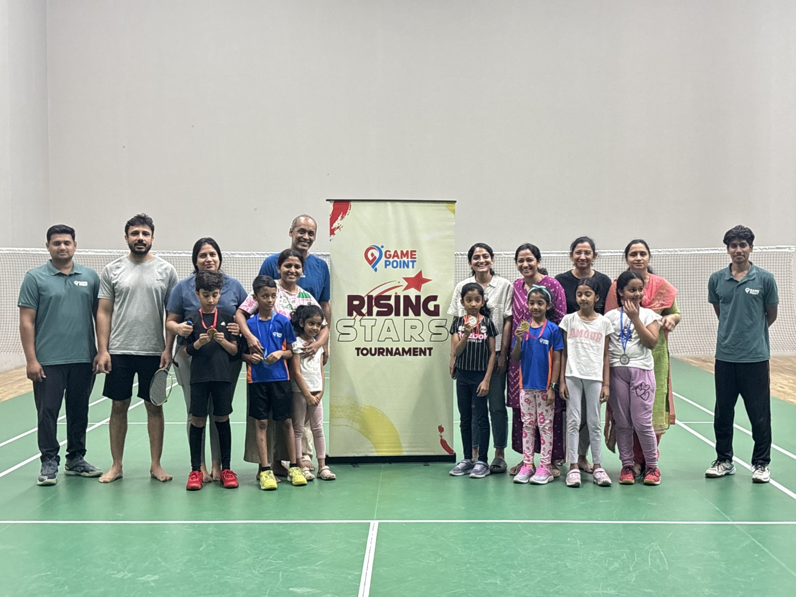
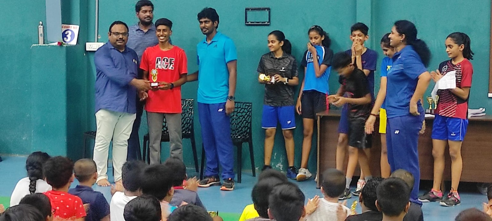
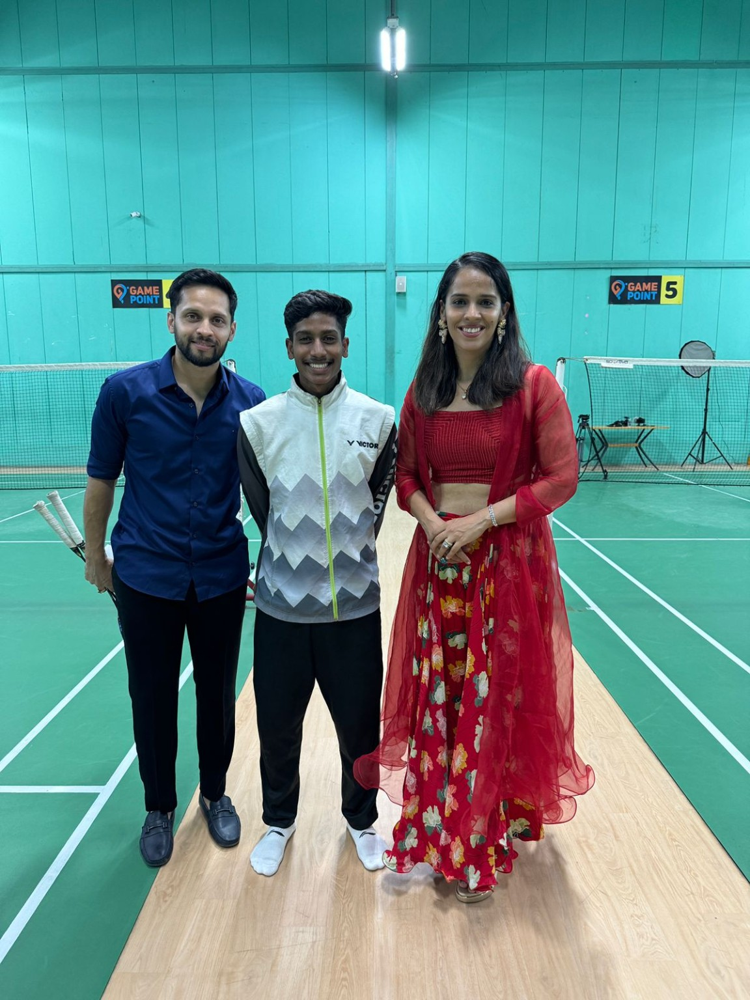
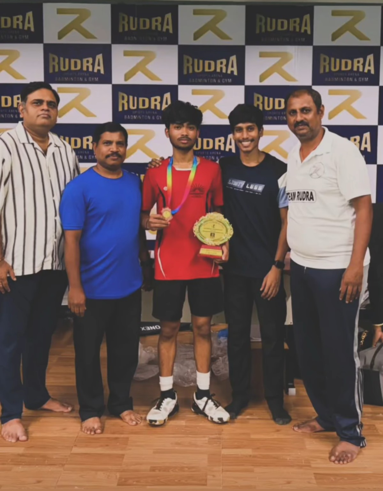
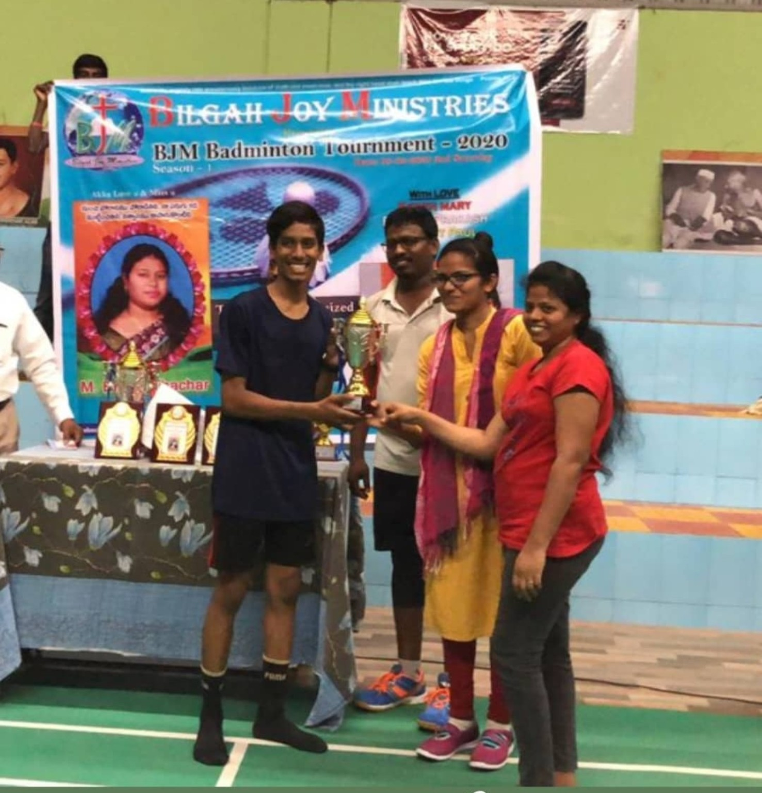
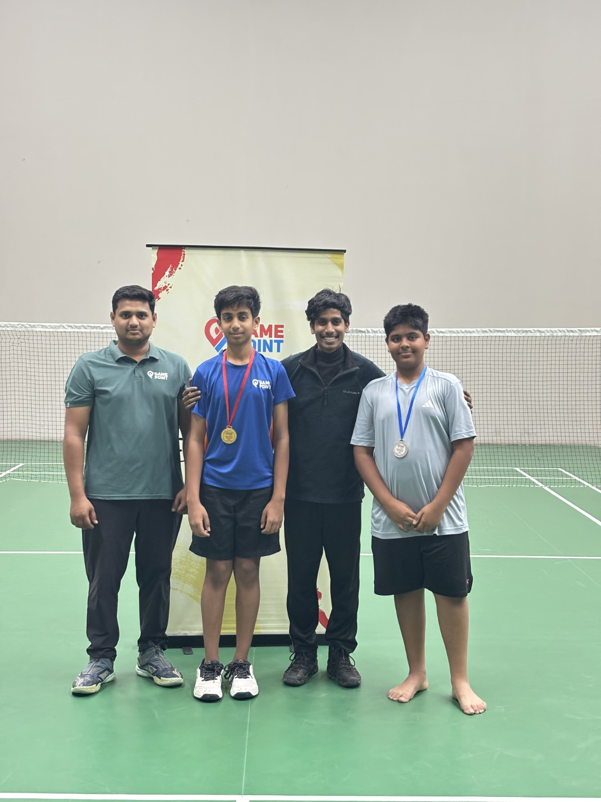
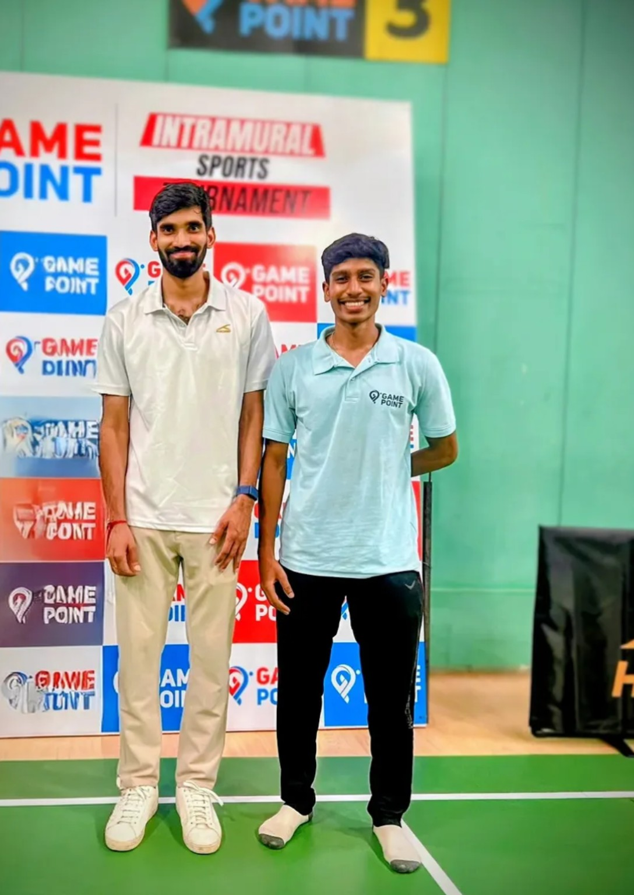
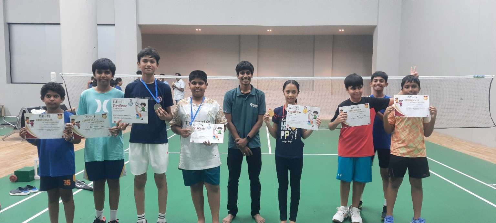

Gamepoint TJE Centre
Badminton coaching, player development and training planning.
BADMINTON COACHING · ATHLETE DEVELOPMENT
Badminton Coach | Athlete Development | Competitive Player
Hyderabad, India · Open to international coaching opportunities
Explore experience ↓01 / PROFILE
Badminton coach and competitive player with five years of coaching experience across academies. Experienced in technical stroke correction, footwork, multi-feeding drills, tactical development, tournament preparation and youth athlete development. Has coached 180+ students across youth and adult groups.
Stroke correction · Footwork · Multi-feeding · Tactical awareness · Match preparation
Youth development · Training structure · Strength and conditioning integration · Parent communication
English · Telugu · Hindi
B.Com in Computer Applications
Osmania University · Graduated 2023
02 / EXPERIENCE
Badminton coaching, player development and training planning.
Coaching leadership and technical, tactical and physical player development.
Worked under E. Deepthi Shalini, supporting technical training, multi-feeding, footwork and player preparation.
Supported structured coaching and player development.
Led coaching sessions and player development.
Led coaching sessions with a focus on technical and tactical development.
Badminton coaching and player training.
Individual badminton training and skill development.
03 / PLAYING & COACHING
Players coached have progressed to district- and state-level competitions.
04 / QUALIFICATIONS
Select a certificate to open its PDF.
05 / ON AND OFF COURT










06 / TRAINING & PLAY
Personal gameplay, coaching, multi-feeding and training videos.
07 / CONTACT
Open to badminton coaching opportunities in India and internationally.
Based in Hyderabad, India.
manassehjoyjonnalagadda@gmail.com ↗